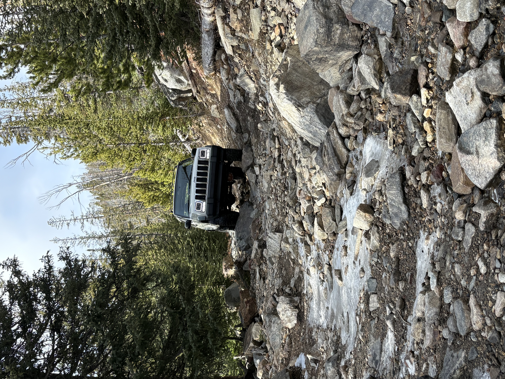
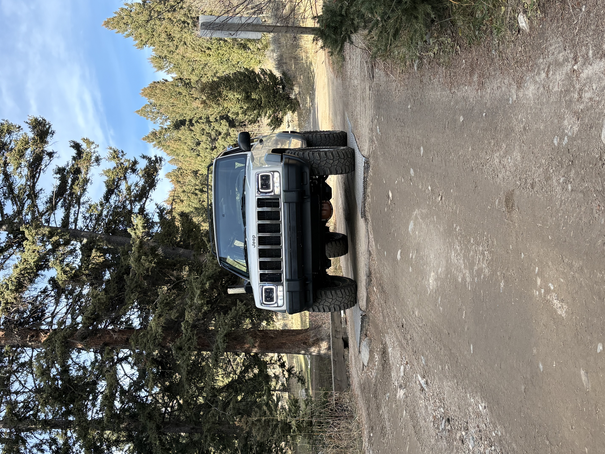
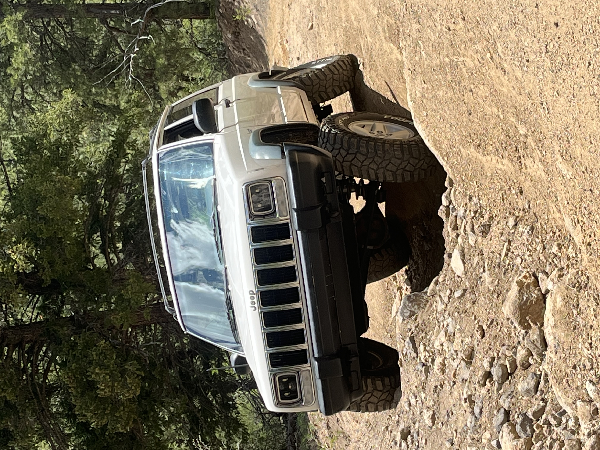
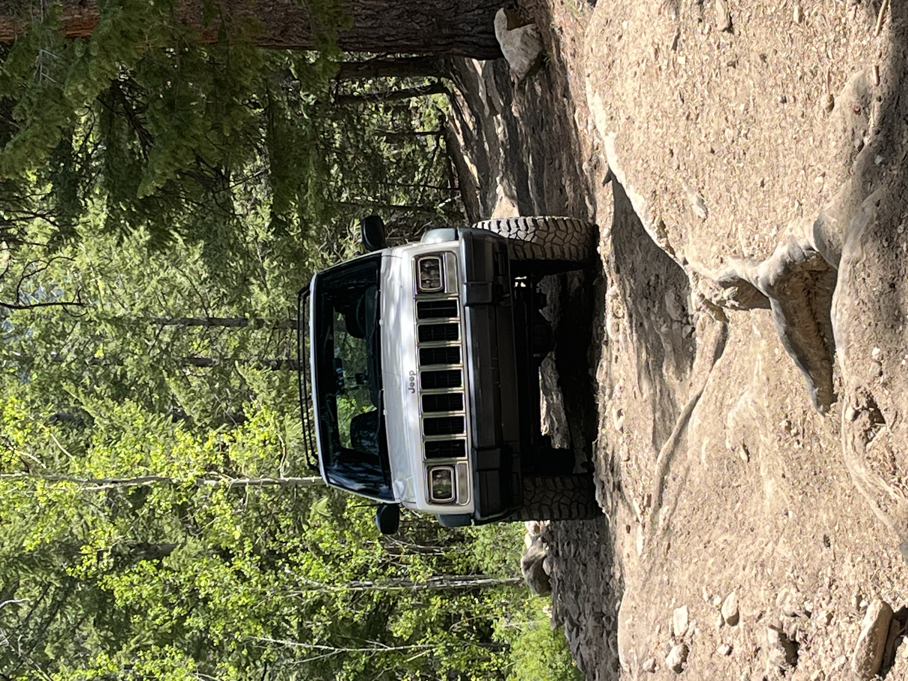

Trails I've Run
South Meadow Creek Lake


Reveiw
South Meadow Creek Trail in Montana is a fun but challenging drive if you are headed all the way to the lake at the top. The trail starts out fairly smooth and easy to follow. As you climb higher the road gets noticeably rougher. The rocks become larger and more frequent and the ruts get deeper. The last section before the lake is especially rocky and narrow and can make for a slow crawl. Depending on the season the upper part of the trail can also get icy and slick, especially in shaded areas and near water crossings. When the ice combines with loose rock it becomes harder to control wheel spin and line choice matters. Lower clearance vehicles may struggle on this trail. A lift and good off road tires make a big difference when climbing over larger rocks and dealing with the uneven surface. Without them you risk scraping your undercarriage and sliding on icy patches. Even with the difficulties the trail rewards you with great views and a peaceful mountain lake at the top. It is worth the trip if you are prepared for rough conditions and changing weather. Bring recovery gear and take your time on the upper sections.
Red Elephant


Reveiw
Red Elephant Hill is a classic Colorado trail known for its steep climb and technical terrain. The first part of the trail is a steady ascent through tight switchbacks and loose rock. As you climb higher the road becomes far more uneven with deep ruts carved by runoff and past traffic. Some of these ruts force you into off-camber lines where good articulation really matters to keep all four tires planted. There are a few sections where the ruts are so deep that open differentials can lead to tire lift and loss of traction. A locker, even just in the rear, can be very helpful in walking up these obstacles without excessive wheel spin. Drivers without lockers will need careful spotting and momentum to make it through. While the trail is not the longest, the steady grade and technical features make it a workout for both driver and vehicle. Skid plates and rock sliders are good insurance as the larger rocks and ledges can sneak up on you. When you reach the top you’re rewarded with sweeping views and a feeling of accomplishment after conquering the hill. Red Elephant Hill is a great choice for experienced drivers looking for a challenge, but it demands preparation and respect for the terrain.
Argentine Pass


Reweiw
Barbour Fork